onboarding-tasks-dup-ids PASS 1.0
grade probeintent repairdomain human_resourcesdifficulty d2ambiguity a2voice terseapps vscodebatch v11-500-s0
Two new-hire tasks in the onboarding checklist share an ID. Give the later one the next free ID and keep the file valid JSON.
task config + evaluator
{
"config": [
{
"type": "execute",
"parameters": {
"command": "python3 -c \"import os,json;d='/home/user/hr/onboarding';os.makedirs(d,exist_ok=True);t=[{'id':1,'task':'Sign employment contract','owner':'People Ops'},{'id':2,'task':'Collect laptop from IT desk','owner':'IT'},{'id':3,'task':'Payroll and tax forms','owner':'Finance'},{'id':4,'task':'Building access badge photo','owner':'Facilities'},{'id':3,'task':'Assign buddy and intro call','owner':'Line Manager'},{'id':6,'task':'Safety induction video','owner':'HSE'},{'id':7,'task':'Add to team mailing lists','owner':'IT'}];open(d+'/checklist.json','w').write(json.dumps({'checklist':t},indent=2))\"",
"shell": true
}
},
{
"type": "launch",
"parameters": {
"command": [
"code",
"/home/user/hr/onboarding/checklist.json"
]
}
}
],
"evaluator": {
"func": "check_include_exclude",
"result": {
"type": "vm_command_line",
"command": [
"python3",
"-c",
"import sys, traceback\ndef _main():\n import json, sys\n try:\n data = json.load(open(\"/home/user/hr/onboarding/checklist.json\"))\n except Exception as e:\n print(\"not valid json: %s\" % e, file=sys.stderr)\n print(\"FAIL\")\n raise SystemExit\n rows = data.get(\"checklist\", [])\n ids = [r.get(\"id\") for r in rows]\n tasks = [r.get(\"task\") for r in rows]\n ok = len(rows) == 7 and ids == [1, 2, 3, 4, 5, 6, 7]\n ok = ok and tasks[4] == \"Assign buddy and intro call\" and tasks[2] == \"Payroll and tax forms\"\n if not ok:\n print(\"ids=%r tasks=%r\" % (ids, tasks), file=sys.stderr)\n print(\"PASS\" if ok else \"FAIL\")\n\ntry:\n _main()\nexcept Exception:\n traceback.print_exc(file=sys.stderr)\n print(\"FAIL\")\n"
]
},
"expected": {
"type": "rule",
"rules": {
"include": [
"PASS"
],
"exclude": [
"FAIL"
]
}
}
}
}
step 1 00:59:24
THINKINGLet me analyze the JSON file shown in the screenshot.
The checklist has these entries:
- id: 1, "Sign employment contract", "People Ops"
- id: 2, "Collect laptop from IT desk", "IT"
- id: 3, "Payroll and tax forms", "Finance"
- id: 4, "Building access badge photo", "Facilities"
- id: 3, "Assign buddy and intro call", "Line Manager" <- duplicate id 3
- id: 6, "Safety induction video", "HSE"
- id: 7, "Add to team mailing lists", "IT"
So the duplicate is id 3. The first id 3 is "Payroll and tax forms" (Finance), the second id 3 is "Assign buddy and intro call" (Line Manager).
The task says: "Two new-hire tasks share an ID. Give the later one the next free ID and keep the file valid JSON."
The "later one" is the second occurrence (line 24, "Assign buddy and intro call"), which should get the next free ID.
Current IDs used: 1, 2, 3, 4, 3(dup), 6, 7. The unique IDs are 1, 2, 3, 4, 6, 7. The next free ID... "next free ID" - this is a bit ambiguous. It could mean the smallest positive integer not used, or the max+1.
Let me think. "the next free ID" - The IDs present (unique): 1,2,3,4,6,7. Missing: 5. So the "next free ID" could be 5, since 5 is the next available free ID in sequence.
But wait, if I change the duplicate (id 3) to 5, then all IDs become: 1,2,3,4,5,6,7. That's clean and sequential. That makes the most sense - "next free ID" = the next free/available ID which fills the gap at 5.
Alternatively "next free ID" could be max+1 = 8. But filling the gap (5) seems more aligned with "free ID" (an ID that is free/unused).
Hmm, "the next free ID" - I think 5 is the best answer because 5 is a free (unused) ID and it's the next one in sequence after the existing ones. This gives a clean 1-7 sequence.
Let me go with 5.
Now let me make the edit. I'll click on the id line for "Assign buddy and intro call" (line 24). The current text is `"id": 3,`. I need to change 3 to 5.
Let me click on the "3" in line 24. Looking at the screenshot, line 24 shows `"id": 3,` at around x=185, y=394.
Actually, let me be careful. Let me double-click on the number to select it. The number "3" in line 24 is at approximately x=185, y=394.
Let me first click there to position, or better use double-click to select the number. But double-click might select "3" cleanly. Let me take a screenshot first to confirm exact position. Actually I have the screenshot already.
Line 24: `"id": 3,` - the "3" is at around x=185, y=394.
Let me double-click on it to select, then type 5.
Actually, to be safe, let me double-click on the number 3 in line 24.
ACTIONI'll analyze the checklist. The IDs are: 1, 2, 3, 4, **3 (duplicate)**, 6, 7. The duplicate is id `3` — the later occurrence is "Assign buddy and intro call" (line 24). The next free ID that fills the gap is `5`, which makes the sequence clean (1–7).
Let me double-click the `3` on line 24 to select it.
TOOL CALL<tool_call>
<function=computer_use>
<parameter=action>
double_click
</parameter>
<parameter=coordinate>
[144, 545]
</parameter>
</function>
</tool_call>
EXECUTED (pyautogui in VM)pyautogui.doubleClick(276, 589)
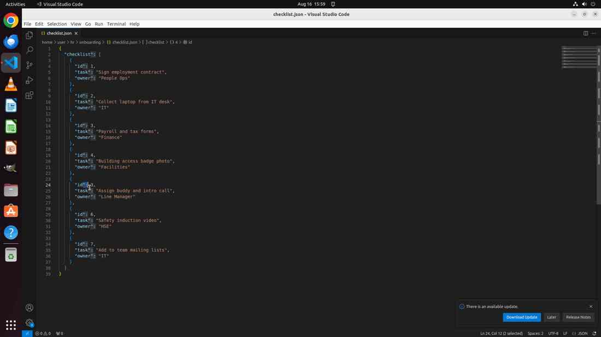
step 2 00:59:40
THINKINGThe status bar shows "Ln 24, Col 12 (2 selected)". Wait, it says "2 selected" - it selected 2 characters. That might be "3," or just the number with something. Let me look - line 24 is `"id": 3,`. The double-click selected the "3" it seems, but it says 2 selected. That's concerning - it may have selected "3" plus the cursor... Actually "2 selected" means 2 characters are selected. The "3" is one character. Hmm.
Wait, maybe it selected the number but there's something. Let me look at line 24 more carefully. It shows `"id": 3,`. The cursor appears to be around the "3". "2 selected" - maybe it selected "3," or "3 " ... Actually a double-click on a number should select just the numeric token "3" which is 1 char.
Let me be careful. Rather than type over a possibly-wrong selection, let me instead just click precisely and use a more controlled approach. Actually, let me reconsider - it could have selected "3" and the following nothing. "2 selected" is odd.
Let me just re-select to be safe. I'll click at the position right after the 3, then select just the 3. Actually, the safest is to type 5 to replace whatever is selected only if it's exactly "3".
Let me instead take a more careful approach: I'll select the whole line 24 content or use a targeted selection. Actually, the risk is that if "2 selected" includes the comma, typing 5 would delete the comma and break JSON.
Let me click once to deselect and re-examine. Let me click right on the "3" character and look. Better: let me just triple... no.
Let me click precisely. The "3" in line 24 - I'll click just to the right of it to place cursor, then use shift+left to select one character.
Actually simplest robust approach: double-click selected something with "2 selected". Let me look at the breadcrumb: it shows `[ ] checklist > {} 4 > #i` - that's just navigation.
Let me re-verify by clicking to position cursor. I'll click at end of the number. Actually, let me just place cursor after the 3 using a click, then select the single char with shift+Left.
Let me click right after the "3". In line 24, `"id": 3,` the "3" is at x≈184, comma at x≈190. Let me click at x=189, y=394 to place cursor after 3.
Actually, let me reconsider the "2 selected". In VS Code, double-clicking a number selects the whole number. If it shows "2 selected", maybe the value rendered is "3" but... no.
Hmm, wait. Maybe the double click hit between characters and selected "3," No, comma isn't part of a word.
To be safe, let me just re-do the selection carefully. Let me press Escape first isn't a thing. Let me click once at a precise location.
ACTIONThe status bar shows "2 selected" which is ambiguous. Let me click precisely to place the cursor after the `3` on line 24, then select just that single character.
TOOL CALL<tool_call>
<function=computer_use>
<parameter=action>
left_click
</parameter>
<parameter=coordinate>
[147, 545]
</parameter>
</function>
</tool_call>
EXECUTED (pyautogui in VM)pyautogui.click(282, 589)
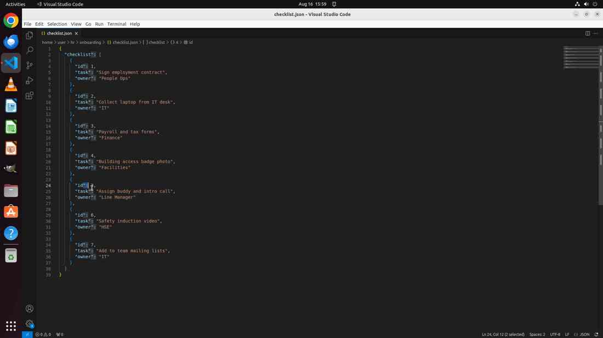
step 3 00:59:54
THINKINGStatus bar still shows "Ln 24, Col 12 (2 selected)". That's odd - a single click should deselect. Wait, maybe the status bar is showing stale info. Col 12. Let me figure out the line content.
Line 24: ` "id": 3,`
Characters: 8 spaces, then `"id": 3,`
Position 1-8: spaces
Pos 9: "
Pos 10: i
Pos 11: d
Pos 12: "
Pos 13: :
Pos 14: (space)
Pos 15: 3
Pos 16: ,
So Col 12 is right after `id`'s closing quote, before the colon. That means my cursor is at col 12, not after the 3. Hmm, that's where I clicked but the click landed at the wrong spot? Actually I clicked at x=189 which is after "3". But status shows col 12.
Wait, "2 selected" still showing - maybe the status bar didn't refresh from the click, or the click registered as part of a drag. This is confusing.
Let me use a more reliable method. Instead of fiddling with mouse clicks, let me use Find & Replace, or better, just retype the entire line.
Actually the cleanest approach: select the whole line and retype it. Let me click on line 24 to place cursor there, then Home, Shift+End to select the line, then type the correct line.
But I need to preserve indentation. The line is ` "id": 3,` with 8 spaces.
Let me do: click on line 24, press Home, then Shift+End to select entire line content, then type ` "id": 5,`.
Actually even simpler and safe: use keyboard. Let me first click somewhere on line 24 to ensure cursor is on that line. Then Home to go to line start (which in VS Code with indent might go to first non-whitespace). Let me use the approach: click on line, then select line.
Let me click on line 24 first.
ACTIONThe status bar position is unreliable. Let me take a robust approach: place the cursor on line 24, select the entire line, and retype it correctly. First I'll click on line 24.
TOOL CALL<tool_call>
<function=computer_use>
<parameter=action>
left_click
</parameter>
<parameter=coordinate>
[234, 545]
</parameter>
</function>
</tool_call>
EXECUTED (pyautogui in VM)pyautogui.click(449, 589)
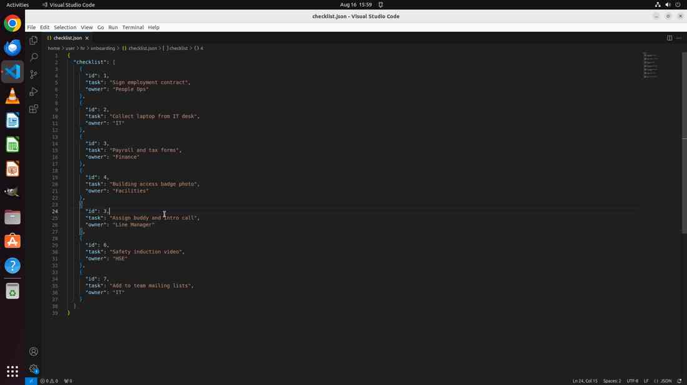
step 4 01:00:06
THINKINGNow the status bar shows "Ln 24, Col 15" with no selection. So the cursor is now on line 24 at col 15. Line 24 content: ` "id": 3,`. Col 15 - let me recount. The line is ` "id": 3,`:
- Col 1-8: 8 spaces
- Col 9: "
- Col 10: i
- Col 11: d
- Col 12: "
- Col 13: :
- Col 14: (space)
- Col 15: 3
- Col 16: ,
Wait, col 15 = the "3"? Actually cursor at col 15 means it's positioned before the character at col 15, i.e., before "3". Hmm, but I clicked at x=300 which is past the comma. That's weird.
Actually wait, the display shows line 24 as `"id": 3,` and cursor at col 15. Let me not overthink. Now I'll select the whole line and retype it. Let me press Home to go to beginning (or use a robust select).
Plan: Press Home (goes to first non-whitespace in VS Code first, then to col 1). To be safe, I'll press Home once (goes to col 9, first non-whitespace), then type the new content but I need to keep it. Actually simplest: select from Home to End and retype.
Let me do: Home, then Shift+End to select the non-whitespace content `"id": 3,`, then type `"id": 5,`. This preserves the leading whitespace.
Let me press Home first.
ACTIONNow the cursor is on line 24 (Col 15). I'll select the line's non-whitespace content and retype it. First press Home to move to the start of the code.
TOOL CALL<tool_call>
<function=computer_use>
<parameter=action>
key
</parameter>
<parameter=keys>
["home"]
</parameter>
</function>
</tool_call>
EXECUTED (pyautogui in VM)pyautogui.press("home")
step 5 01:00:16
THINKINGNow status shows "Ln 24, Col 7". Hmm, Home went to col 7? That's the first non-whitespace position. So the line has 6 spaces of indentation, not 8. Let me recount:
- Col 1-6: 6 spaces
- Col 7: "
- Col 8: i
- Col 9: d
- Col 10: "
- Col 11: :
- Col 12: (space)
- Col 13: 3
- Col 14: ,
Wait earlier it said col 15 for the click and now Home = col 7. So indentation is 6 spaces. The value "3" is at col 13.
Now the cursor is at col 7 (start of `"id"`). I'll select to End of line with Shift+End, then retype the content `"id": 5,`.
Let me press Shift+End to select the rest of the line.
ACTIONHome moved to Col 7 (start of the code, 6-space indent). Now I'll select to end of line and retype it with the new ID.
TOOL CALL<tool_call>
<function=computer_use>
<parameter=action>
key
</parameter>
<parameter=keys>
["shift", "end"]
</parameter>
</function>
</tool_call>
EXECUTED (pyautogui in VM)pyautogui.hotkey("shift", "end")
step 6 01:00:28
THINKINGNow the status bar shows "Ln 24, Col 15 (8 selected)". So 8 characters are selected: `"id": 3` = that's 8 chars (", i, d, ", :, space, 3) = 8. Wait, `"id": 3` = " i d " : (space) 3 = 8 characters. Yes! So the selection is `"id": 3` and the comma at col 15 is NOT selected (cursor at col 15 means before the comma).
Hmm, so the selected text is `"id": 3` and the comma remains after. So if I type `"id": 5,` it would produce `"id": 5,,` (double comma). I should type `"id": 5` without the comma, keeping the existing comma.
Wait, let me verify. The line is ` "id": 3,`. Selected from col 7 to col 14 (before comma at col 15). Selected text = cols 7-14 = `"id": 3` (8 chars: positions 7,8,9,10,11,12,13,14 = " i d " : space 3). Yes, 8 chars. The comma is at col 15 and not selected.
So I should type `"id": 5` (without comma) to replace the selection, leaving the existing comma intact. Result: `"id": 5,`.
Let me type `"id": 5`.
ACTION8 characters selected (`"id": 3`), with the trailing comma left intact. I'll type the replacement without the comma.
TOOL CALL<tool_call>
<function=computer_use>
<parameter=action>
type
</parameter>
<parameter=text>
"id": 5
</parameter>
</function>
</tool_call>
EXECUTED (pyautogui in VM)pyautogui.typewrite("\"id\": 5")
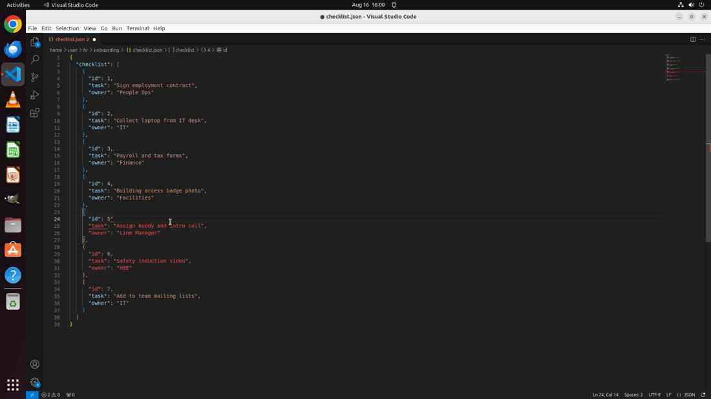
step 7 01:00:47
THINKINGLine 24 now shows `"id": 5"` — wait, it shows `"id": 5"` with a closing quote? Let me look carefully. Line 24: `"id": 5"`. Hmm, that looks like there's a stray quote after 5. Wait, no. Let me look again. The display shows `"id": 5"`. That would be wrong - a quote after 5.
Wait, actually this might be the rendering. Let me look - it says `"id": 5"` then on line 25 `"task":...`. Actually there appear to be red squiggly warnings now (the problems count went from 0 to "2" - shown at bottom left "2 0 0" with a warning triangle). And line 24/25/26/27 have red underlines.
Hold on. Let me reconsider. When I typed `"id": 5`, VS Code might have auto-closed the quote! When I typed the opening `"` for "id", VS Code may have auto-inserted a closing `"`, and then... no wait, I typed over a selection.
Actually the issue: I typed `"id": 5`. The leading `"` might have triggered auto-close inserting `"`, making it `""id": 5"` or similar. Let me look at the actual line.
The line 24 now reads: `"id": 5"` — there's definitely an extra `"` after the 5. And there are error indicators (2 problems, red squiggles on lines 24-27).
Wait, actually the status shows bottom left "2 0 0" - 2 errors. So the JSON is now broken.
Let me think about what happened. Original selected text was `"id": 3` (8 chars). I typed `"id": 5`. If no auto-close, result = `"id": 5` + existing comma = `"id": 5,` which is correct.
But the display shows `"id": 5"`. So an extra quote appeared. This suggests auto-closing of quotes interfered. When typing the first `"`, VS Code sees I'm replacing a selection that starts with `"`, so it might "type over" the closing... it's complex.
Actually, wait. Let me reconsider. Maybe the rendering is just hard to read. Let me look: the text is `"id": 5"`. Hmm.
Also I notice the red squiggles on lines 25, 26, 27 too, which suggests a structural break - a stray quote throwing off parsing.
Let me undo this and take a cleaner approach. Let me press Ctrl+Z to undo the typing, then use a different method.
Actually, let me first take a screenshot to see clearly. I already have it. Let me zoom by looking carefully. Line 24: ` "id": 5"`. There's a quote after 5 and no comma visible? Actually the comma might be there but hard to see.
Let me undo and redo more carefully. I'll press Ctrl+Z multiple times to revert, then use Find & Replace which is more reliable.
Actually, the cleanest fix: let me just fix the current line. But I'm not 100% sure of the current exact content. Let me undo the type operation first.
ACTIONThe line now looks like it has a stray quote (`"id": 5"`) and there are 2 error indicators, suggesting VS Code's auto-closing interfered. Let me undo this and use a more reliable approach.
TOOL CALL<tool_call>
<function=computer_use>
<parameter=action>
key
</parameter>
<parameter=keys>
["ctrl", "z"]
</parameter>
</function>
</tool_call>
EXECUTED (pyautogui in VM)pyautogui.hotkey("ctrl", "z")
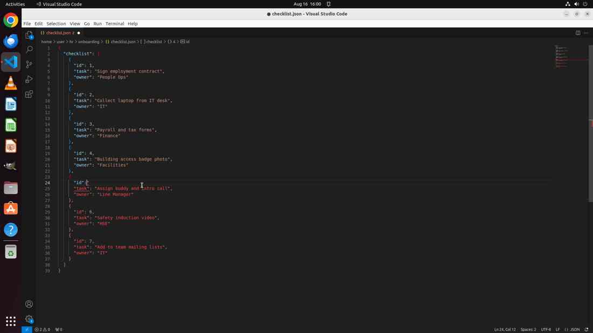
step 8 01:00:58
THINKINGThe undo removed one character. Now line 24 shows `"id": ` (the "5" is gone, cursor at col 12). The breadcrumb now shows the path. Still "2 0 0" errors at bottom? Let me look - bottom left shows "2 0 0". Hmm, still showing 2 errors but that might be stale, or the current state still has issues.
Wait, line 24 now shows `"id":` with cursor after the colon/space, no value. That means undo removed the "5". But there might still be leftover. Actually the line shows `"id": ` and then cursor. Let me undo more to fully revert to original `"id": 3,`.
Actually, the issue is the auto-closing quote. Let me undo more to get back to the clean original. Let me press Ctrl+Z a few more times.
Actually, a cleaner strategy: Let me disable the auto-close issue by using Find and Replace (Ctrl+H) which doesn't trigger auto-closing. But first I need the file back to a valid state.
Let me undo more to restore `"id": 3,`. Let me press Ctrl+Z again.
ACTIONThe undo removed the `5`. Let me undo further to fully restore the original line, then use Find & Replace which avoids auto-closing issues.
TOOL CALL<tool_call>
<function=computer_use>
<parameter=action>
key
</parameter>
<parameter=keys>
["ctrl", "z"]
</parameter>
</function>
</tool_call>
EXECUTED (pyautogui in VM)pyautogui.hotkey("ctrl", "z")
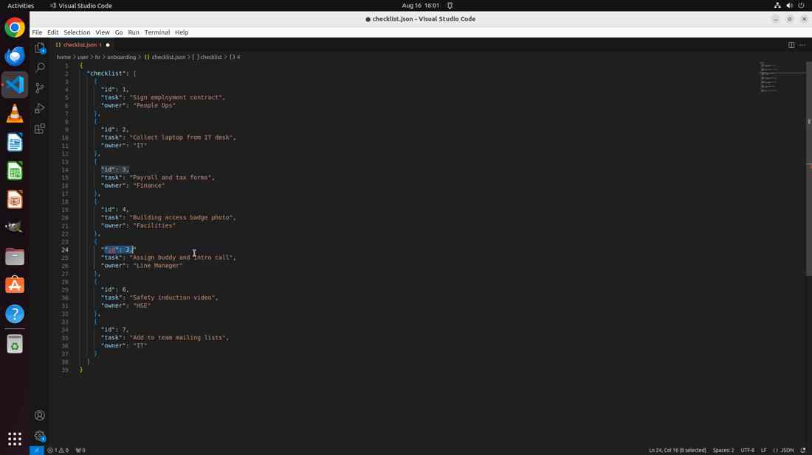
step 9 01:01:26
THINKINGNow line 24 shows `"id": 3,` again (restored), and there's a selection "8 selected" at Col 16. Wait, the tab shows "checklist.json 1" with a dot (unsaved). The bottom shows "1 0 0" - 1 error? Hmm. Actually it might still be showing the selection from before (the 8-char selection was restored by undo). The tab title shows "1" which might indicate a modified state.
Wait, there's still a dot in the tab (unsaved changes) and "1 0 0" - could be 1 error. But the file should be back to original now which was valid. Let me not worry; let me verify by taking stock.
Actually the original file was valid JSON (before my edits). Now after undoing, line 24 shows `"id": 3,` which is the original. But there might be residual unsaved state. The "1 0 0" - hmm.
Let me reconsider my whole approach. The auto-close quote feature is causing problems. Let me use a completely different, robust method: use the terminal to edit the file directly, or use VS Code's Find & Replace (which doesn't trigger auto-close).
Actually, the simplest robust approach: Open a terminal and use a command to do the replacement, then reload. But that's heavier.
Alternatively, Find & Replace in VS Code: Ctrl+H. Search for a unique string. The second "id": 3 is in the "Assign buddy" object. But both id:3 lines are identical `"id": 3,`. Find & Replace would replace the first occurrence by default. I need to replace only the second one.
Hmm. To target the second occurrence uniquely, I could search for a larger context. The second object is:
```
"id": 3,
"task": "Assign buddy and intro call",
```
I could search for `"id": 3,\n "task": "Assign buddy` — but that spans lines. Find & Replace in VS Code supports multi-line with regex mode.
Actually, simpler: search (regex) for `3,\s*"task": "Assign buddy` and replace with `5, "task": "Assign buddy`. But the whitespace/newline matters.
Alternatively, I realize the auto-close problem only happens when I type a quote. If I just type a number (no quote), no auto-close. So let me go back to the selection approach but only replace the digit "3" with "5", not the whole `"id": 3`.
The digit "3" is at col 13 (based on earlier: 6 spaces + `"id": ` = 6+6=12 chars before the 3, so 3 is at col 13). Earlier when I clicked, cursor was at col 15 which was the comma. Let me recompute: ` "id": 3,`
- col 1-6: spaces (6)
- col 7: "
- col 8: i
- col 9: d
- col 10: "
- col 11: :
- col 12: (space)
- col 13: 3
- col 14: ,
Wait, that's 6 spaces? Earlier Home gave col 7, meaning first non-whitespace at col 7, so 6 spaces. Then " at 7, i 8, d 9, " 10, : 11, space 12, 3 13, , 14. So the digit 3 is at col 13.
Earlier the click at x=189 gave col 15, which is past the comma. Hmm, inconsistent. And col 15 = the comma? No, comma is at col 14. Col 15 would be after comma. Anyway.
The reliable approach: double-click directly on the "3" digit to select just it, then type "5" (a single digit, no quote, so no auto-close issue).
Let me first ensure the file is clean. Let me press Ctrl+Z once more to fully revert any residual, then check. Actually the current state shows `"id": 3,` which is correct/original. But there's an "8 selected" and a dot in tab. Let me just proceed: the content of line 24 is `"id": 3,` which is fine.
But wait - is the file currently in a valid/unchanged state? The dot in the tab suggests unsaved changes still. Let me press Ctrl+Z one more time to be safe and get a clean state, then check the problems count.
Actually, I'm concerned about over-undoing (reverting the selection isn't an undo). Let me instead just verify current state is the original and valid. Let me click on line 24 to deselect and see the errors count.
Let me press Escape/click, then check. Actually let me just double-click the "3" now. But there's currently an 8-char selection. Let me first make sure I only select the digit.
Let me take a cleaner path. I'll click on the digit 3 in line 24. The digit 3 is at col 13, which is at approximately x=185 (based on the "3" position in line 24). Let me look at the screenshot: line 24 shows `"id": 3,` and the "3" is around x=185. Let me double-click at x=185, y=394.
But I worry the current file state. Let me first press Ctrl+Z once more and check the tab/problems to confirm clean state.
ACTIONThe line is restored to `"id": 3,`. Let me press Ctrl+Z once more to ensure the file is fully back to its original clean state, then I'll verify.
TOOL CALL<tool_call>
<function=computer_use>
<parameter=action>
key
</parameter>
<parameter=keys>
["ctrl", "z"]
</parameter>
</function>
</tool_call>
EXECUTED (pyautogui in VM)pyautogui.hotkey("ctrl", "z")
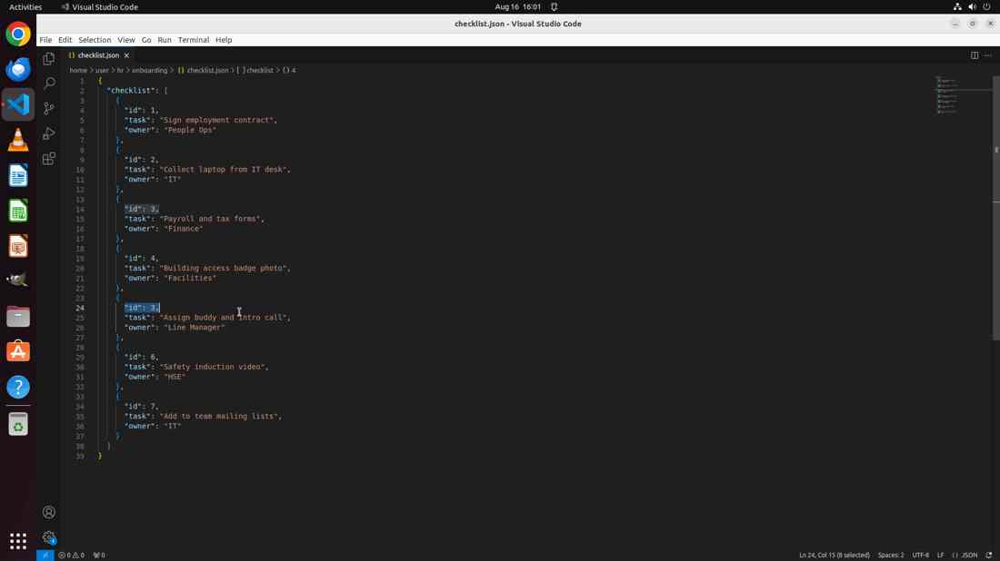
step 10 01:01:44
THINKINGNow the tab shows "checklist.json" without the dot (the X close icon is shown, meaning no unsaved changes - actually the tab shows the X which means it's saved/clean). The title bar shows "checklist.json - Visual Studio Code" without the dot. The problems count at bottom left shows "0 0 0". So the file is back to its original valid state.
Now, the selection still shows "8 selected" (the `"id": 3` from before). But the file content is original.
Now let me use a robust approach that avoids auto-close. I'll double-click on just the digit "3" and type "5". A single digit won't trigger auto-close.
The digit "3" in line 24. Let me identify its x position. Line 24 content ` "id": 3,`. Looking at the screenshot, the "3" appears to be right before the comma. In line 24, I can see `"id": 3,` around x=160-205. The "3" is around x=185, comma at x=192.
Let me double-click on the "3" at x=185, y=394 to select just the digit.
Wait, earlier double-click at x=185 gave "2 selected". That's strange - double clicking a single digit should give "1 selected". Unless it selected "3," or the auto... no. Hmm. Actually earlier the first double-click at (185,394) gave "2 selected". Maybe it selected "3" and something, or maybe the character I hit was in a spot where the word was "3," - no, comma isn't part of word.
Wait, maybe the earlier "2 selected" was actually from the first screenshot where I misread. Let me not worry.
Alternative robust approach: Use Find & Replace with regex to replace only the second occurrence. Let me use Ctrl+H.
Actually, the cleanest: use the terminal to do the replacement with a script. But let me try the simplest editor approach first: double-click the digit and type 5.
Let me double-click precisely on the "3". I'll aim for the center of the "3" glyph. Looking at line 24, after `"id": ` the "3" is the character before the comma. Let me estimate: the `"` before id is at ~x=163, `id` at ~167-173, `"` at ~176, `:` at ~180, space, `3` at ~185, `,` at ~192.
Let me double-click at x=185, y=394.
ACTIONGood — the file is back to its original valid state (0 problems, no unsaved-dot). Now I'll target only the digit `3` by double-clicking it, then type `5` (a single digit won't trigger auto-closing).
TOOL CALL<tool_call>
<function=computer_use>
<parameter=action>
double_click
</parameter>
<parameter=coordinate>
[144, 545]
</parameter>
</function>
</tool_call>
EXECUTED (pyautogui in VM)pyautogui.doubleClick(276, 589)
step 11 01:02:06
THINKINGStatus bar shows "Ln 24, Col 12 (2 selected)". Col 12 and 2 selected. Hmm. Col 12 is after the space (col 11 = colon, col 12 = space). Wait, my earlier analysis: col 7=", 8=i, 9=d, 10=", 11=:, 12=space, 13=3, 14=,.
"2 selected" with anchor... The selection shows Col 12. If 2 chars selected ending at col 12, they'd be cols 10-11 (the closing quote and colon) or the selection is cols 10-11. That doesn't match the "3".
Hmm, this is inconsistent. Wait, maybe the double-click at x=185 actually landed on the `:` area or the space, not the 3. The "2 selected" might have selected `: ` or `" ` or something.
Actually wait, looking at the screenshot, line 24 shows `"id" 3,` with the highlight seemingly around the area. Hard to tell exactly what's highlighted.
This mouse-clicking approach is unreliable due to the small text. Let me abandon the pixel-based clicking and use a fully deterministic method: Find & Replace with regex, or the terminal.
Let me use the terminal approach which is 100% deterministic. I'll open a terminal in VS Code (Terminal menu > New Terminal) and run a command to replace the second occurrence.
Actually, even simpler and safe: Use VS Code Find & Replace (Ctrl+H) with a regex that uniquely matches the second object's id line using surrounding context.
The second object:
```
"id": 3,
"task": "Assign buddy and intro call",
```
I want to change `"id": 3,` that is followed by `"task": "Assign buddy`.
In regex mode, search: `"id": 3,(\s*"task": "Assign buddy)`
Replace: `"id": 5,$1`
But the `\s*` across the newline - Find & Replace with regex in VS Code: \s matches whitespace including newlines. Yes.
But I need to be careful about exact whitespace. The line 24 is ` "id": 3,` and line 25 is ` "task": "Assign buddy and intro call",`. There's a newline and indentation between `,` and `"task"`.
Regex search: `"id": 3,\s*"task": "Assign buddy`
Replace: `"id": 5, "task": "Assign buddy`
Wait, but I'd be replacing the whitespace in between too. Let me capture it:
Search: `("id": )3(, *\n * "task": "Assign buddy)` — too complex.
Simpler: Search regex: `"id": 3(?=\s*,\s*"task": "Assign buddy)`
Replace: `"id": 5`
This uses a lookahead so I only replace the `3` that is followed by `,` and then `"task": "Assign buddy`. This is clean - only the digit 3 gets replaced, nothing else.
Let me verify uniqueness: The first "id": 3 (line 14) is followed by `"task": "Payroll..."`, not "Assign buddy". So only the second matches.
Let me open Find & Replace with Ctrl+H, enable regex, and do this.
Actually, let me reconsider - maybe simpler to just use the terminal with sed/perl. But the lookahead regex in VS Code find is fine and keeps the file in the editor. Let me use Find & Replace.
First, let me press Escape to clear the current selection. Then Ctrl+H.
ACTIONPixel-based clicking is imprecise here. I'll switch to Find & Replace with a regex that uniquely targets the second occurrence (the one followed by the "Assign buddy" task), so I only change that `3` to `5`. First, Escape to clear the selection, then open Find & Replace.
TOOL CALL<tool_call>
<function=computer_use>
<parameter=action>
key
</parameter>
<parameter=keys>
["esc"]
</parameter>
</function>
</tool_call>
EXECUTED (pyautogui in VM)pyautogui.press("esc")
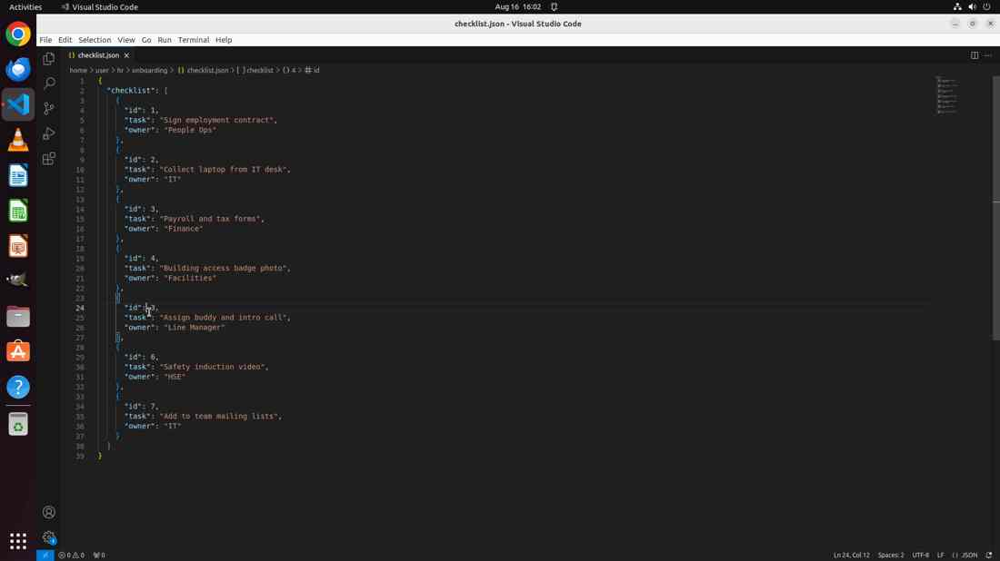
step 12 01:02:15
THINKINGSelection cleared, cursor at Ln 24, Col 12. Now let me open Find & Replace with Ctrl+H.
ACTIONNow I'll open the Find & Replace widget.
TOOL CALL<tool_call>
<function=computer_use>
<parameter=action>
key
</parameter>
<parameter=keys>
["ctrl", "h"]
</parameter>
</function>
</tool_call>
EXECUTED (pyautogui in VM)pyautogui.hotkey("ctrl", "h")
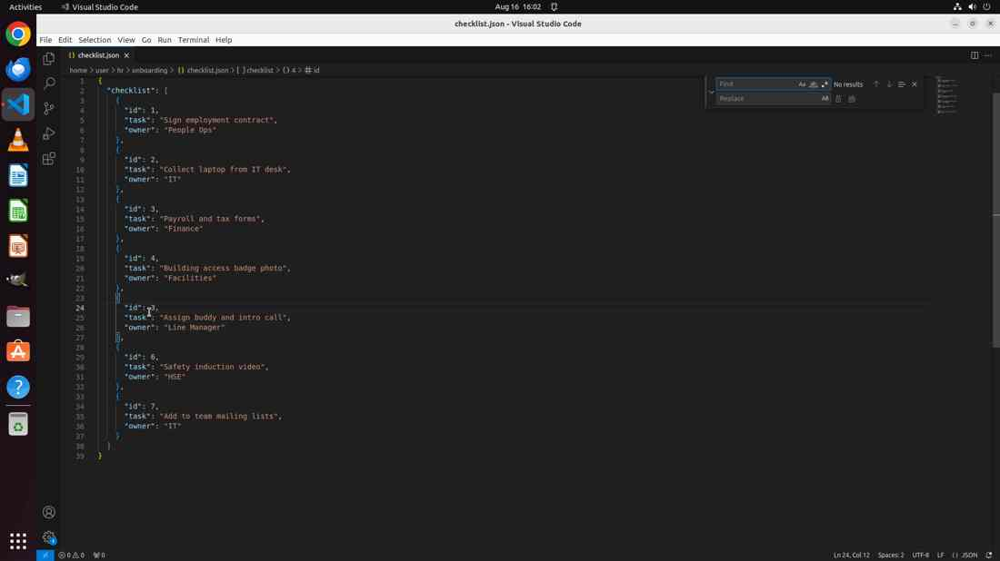
step 13 01:02:28
THINKINGThe Find & Replace widget is open. I see the "Find" field and "Replace" field. There are icons on the right of the Find field: Aa (match case), a.b (match whole word), .* (regex). The regex toggle `.*` is at around x=1056, y=107. Let me enable regex first by clicking it, or I can press the regex button.
Actually, let me type the find pattern first, then enable regex. Let me click the regex toggle button. It's the rightmost icon in the find field row, at ~x=1056, y=107.
Let me click the regex button `.*`.
ACTIONThe Find & Replace widget is open. I'll enable the "Use Regular Expression" (regex) option first by clicking the `.*` icon in the Find field.
TOOL CALL<tool_call>
<function=computer_use>
<parameter=action>
left_click
</parameter>
<parameter=coordinate>
[824, 147]
</parameter>
</function>
</tool_call>
EXECUTED (pyautogui in VM)pyautogui.click(1583, 158)
step 14 01:02:42
THINKINGThe regex toggle appears now highlighted/active (the `.*` icon at x=1056 looks pressed). Now let me click into the Find field and type my regex.
Find field is at ~x=965, y=107. Let me click it and type the regex.
Regex: `"id": 3(?=\s*,\s*"task": "Assign buddy)`
Wait, I need to be careful with the whitespace between `"id": ` and the digits. The literal is `"id": 3` - there's a space after the colon. So `"id": 3` is the literal. My regex: `"id": 3(?=\s*,\s*"task": "Assign buddy)`.
But wait, `\s*` after the `3` - the char right after 3 is `,`. So `3,`. `\s*,` would match zero whitespace then comma - fine. Then `\s*` matches the newline + indentation. Then `"task": "Assign buddy`.
Actually the `.` in `Assign buddy` - no dots there. Good. But regex special chars: the `"` are literal, `:` literal, space literal. All fine.
Let me type this into the Find field. Then in Replace field type `"id": 5`.
Let me click the Find field first.
ACTIONRegex mode is enabled. Now I'll click the Find field and enter a regex that matches only the `3` preceded by `"id": ` and followed by the "Assign buddy" task.
TOOL CALL<tool_call>
<function=computer_use>
<parameter=action>
left_click
</parameter>
<parameter=coordinate>
[752, 147]
</parameter>
</function>
</tool_call>
EXECUTED (pyautogui in VM)pyautogui.click(1445, 158)
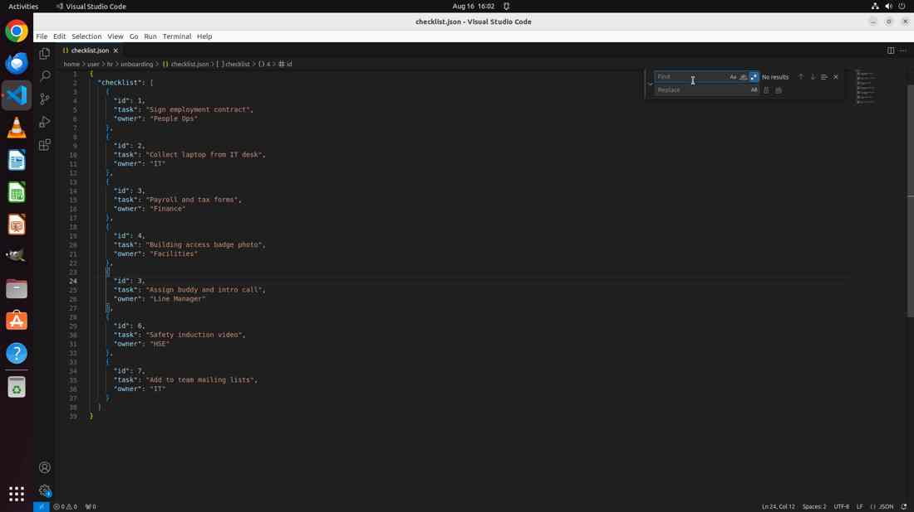
step 15 01:02:54
THINKINGThe Find field is focused (cursor in it). The regex toggle is active (highlighted). Now let me type the regex pattern.
I'll type: `"id": 3(?=\s*,\s*"task": "Assign buddy)`
Wait, I need to make sure the find field doesn't have auto-quote issues - it's a plain input field, no auto-close. Good.
Let me type the pattern.
ACTIONThe Find field is focused with regex mode on. I'll type the pattern that matches only the second occurrence's `3`.
TOOL CALL<tool_call>
<function=computer_use>
<parameter=action>
type
</parameter>
<parameter=text>
"id": 3(?=\s*,\s*"task": "Assign buddy)
</parameter>
</function>
</tool_call>
EXECUTED (pyautogui in VM)pyautogui.typewrite("\"id\": 3(?=\\s*,\\s*\"task\": \"Assign buddy)")
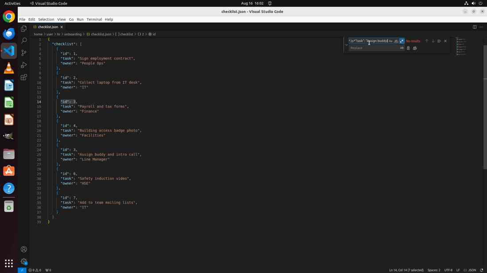
step 16 01:03:55
THINKINGHmm, it says "No results" and the status bar shows "Ln 14, Col 14 (7 selected)" - it highlighted the FIRST "id": 3 (line 14), not line 24! The selection is on line 14 (`"id": 3,` highlighted).
Wait, "No results" in the find widget but there's a selection on line 14? That's confusing. Let me re-read. The find field shows `k\s*,"task": "Assign buddy)` (truncated view). It says "No results".
But the editor shows line 14 `"id": 3,` highlighted and status "Ln 14, Col 14 (7 selected)". Hmm.
Wait, actually maybe the regex has an issue. Let me reconsider. My regex: `"id": 3(?=\s*,\s*"task": "Assign buddy)`.
The problem: "No results" means the regex didn't match. Why?
The text is:
Line 24: ` "id": 3,`
Line 25: ` "task": "Assign buddy and intro call",`
So after `"id": 3` comes `,` then newline then spaces then `"task": "Assign buddy`.
My regex `"id": 3(?=\s*,\s*"task": "Assign buddy)`:
- `"id": 3` matches literal
- `(?=` lookahead
- `\s*` - zero or more whitespace
- `,` - comma. Right after 3 is `,`. Good.
- `\s*` - matches newline + indentation
- `"task": "Assign buddy` - matches
This should match on line 24. Why "No results"?
Hmm, wait. Maybe the issue is the space in `"id": 3`. In the file, is it `"id": 3` with a space after colon? Let me check - the file uses `"id": 1,` etc. Yes there's a space.
Actually wait - maybe the lookahead across newline is the issue. In VS Code regex, does `\s` match newlines? In VS Code's regex engine (JavaScript-based), `\s` does match `\n`. And the search should span lines. But maybe VS Code Find operates line by line for the match? No, with regex it should span.
Actually, hold on. The "No results" might be because the pattern genuinely doesn't match due to some subtle thing. But there IS a selection on line 14. That's weird - "No results" but line 14 selected.
Oh wait! Maybe the selection on line 14 is a leftover/stale highlight from before, and "No results" is accurate - the regex found nothing.
Let me reconsider why it doesn't match. Possibility: the `.` in regex - no.
Possibility: Maybe the whitespace between lines. Let me reconsider - actually maybe the issue is that VS Code's find with regex, when the match would span multiple lines, it does work. Let me reconsider the exact content.
Actually, wait. Let me reconsider. Maybe there's no issue with newlines but the real problem: the text might use different spacing. Let me reconsider - actually, let me simplify. Instead of a lookahead spanning lines, let me just match the unique full line context differently.
Actually, a much simpler and robust regex that definitely works line-by-line: match `"id": 3,` but I need to distinguish from the other `"id": 3,`. They're on separate lines so line-based matching can't distinguish them by content alone (both lines are identical ` "id": 3,`).
So I DO need multi-line context. Let me reconsider why the multi-line regex failed.
Alternative: Use a regex that matches across the two lines explicitly with \n:
`"id": 3,\n\s*"task": "Assign buddy`
But I want to only replace the `3`.
Actually, let me reconsider - maybe the problem is that VS Code find field interpreted my input differently. Let me look at what's shown in the find field: it shows `k\s*,"task": "Assign buddy)`. The full pattern would be `"id": 3(?=\s*,\s*"task": "Assign buddy)`. Wait, the visible part starts with `k\s*` — but my pattern had `"task"` before `\s*`. The visible text is just the end portion due to field width: `...k\s*,"task": "Assign buddy)`. Hmm, that reads as `k` then `\s*` then `,"task"`.
Wait, that's different from what I typed! I typed `\s*,\s*"task"`. But the field shows `\s*,"task"`. Let me look again: `k\s*,"task": "Assign buddy)`.
Hmm, so it shows: ...`k` `\s*` `,` `"task"` ... That means the text is `...k\s*,"task": "Assign buddy)`.
My original: `"id": 3(?=\s*,\s*"task": "Assign buddy)`
The tail of that: `...Assign buddy)` with before it `"task": ` and before that `\s*,` and before that `\s*` and before that `(?=` and `3` and `"id": `.
The field displays the rightmost part (since cursor is at end): `...k\s*,"task": "Assign buddy)`. Wait that has `k\s*,` — where did the `k` come from? "task" ends in "k". So `"task"` — but the display shows `k\s*,"task"`. That would mean there's a `\s*` between the first "task"'s k and the second... no.
I think I'm misreading the truncated text. The field is showing the end of my long pattern. Let me not over-analyze the display.
The key issue: "No results". Let me reconsider the regex validity.
Actually, maybe the problem is that the lookahead `\s*` after the comma needs to match the newline AND the fact that in VS Code, the find might need the whole match on... no.
Let me try a different, definitely-working approach. Let me reconsider: perhaps `\s` in VS Code search does NOT match newlines by default? Actually in VS Code, `.` doesn't match newline but `\s` DOES match newline. Multi-line regex works in VS Code find. So it should work.
Hmm, wait. Let me reconsider whether the text actually has what I think. Let me re-examine: maybe between the two id:3 entries there's no issue, but maybe the FIRST "id": 3 is on line 14 and it's also followed by a task. My regex specifically requires "Assign buddy" so only line 24 should match.
Let me reconsider: "No results" - the regex is invalid or no match. If regex were invalid, VS Code shows a red indicator, not "No results". "No results" means valid regex, zero matches.
Why zero matches? Let me think about the exact bytes. The comma: `"id": 3,` — is there really a comma right after 3? Yes, line 24 is `"id": 3,`.
Wait — maybe the issue is that my pattern has `"id": 3` but the actual might be different. Let me reconsider the exact file. Actually you know what, let me just simplify to avoid lookahead and multiline complications.
New plan: Replace using a pattern that captures the whole relevant portion. Let me clear the find field and use:
Find (regex): `"id": 3,(\n[ ]*)"task": "Assign buddy`
Replace: `"id": 5,$1"task": "Assign buddy`
This matches line 24-25 content and only that (since line 14 is followed by "Payroll"). The replacement preserves the newline+indent ($1) and the task line. This replaces only line 24's `3` with `5` because the whole match only occurs at line 24.
But wait, if my previous multiline attempt gave "No results", this one might too if there's a fundamental issue with my assumption. Let me reconsider whether the match truly spans.
Actually, let me reconsider: maybe the problem is that I have `"id": 3` but actually maybe it's fine and the "No results" is because... hmm. Let me test a simpler hypothesis: maybe VS Code's regex find requires the pattern to be a full match within the searchable and it IS working, but my lookahead syntax `(?=...)` — maybe the field didn't capture the `(` properly, or an auto-bracket in the find field... no, find fields don't auto-bracket.
Let me just clear and try a cleaner multi-line replacement. First, let me select all in the find field and clear it.
Let me triple-click the find field or Ctrl+A then delete.
Actually, let me reconsider the "7 selected" on line 14. That's odd. When you type in the find box and it matches, VS Code highlights the first match. It highlighted line 14's `"id": 3` (7 chars: `"id": 3` = 7 chars? " i d " : space 3 = 7 chars, yes!). So it DID find a match of `"id": 3` on line 14!
Wait, but that means the regex matched line 14?? But line 14 is followed by "Payroll", not "Assign buddy". Unless... the lookahead is being ignored or my regex effectively just matched `"id": 3`.
OH. I bet the issue: the field might not have accepted the full regex. Or — more likely — VS Code highlighted `"id": 3` on line 14 as a *partial*? No.
Hmm, actually wait. Let me reconsider. Maybe the regex I typed got mangled. If the `(?=\s*,\s*"task": "Assign buddy)` part failed or the `(` was interpreted oddly...
Actually, the most likely explanation: VS Code found the match and it's showing line 14 because... no, the lookahead should prevent line 14 from matching.
Let me step back and think. Actually maybe my regex IS matching correctly but the FIRST match in the document for the *lookahead* is... no, line 14 is followed by "Payroll and tax forms", so `\s*,\s*"task": "Assign buddy` wouldn't match after line 14's 3.
I'm confused by the display. Let me just take a cleaner, deterministic route: use the terminal. Let me clear the find field, close the widget, and use a terminal with a precise tool.
Actually, let me reconsider the whole thing. The cleanest deterministic approach is to just edit the file via terminal with a well-tested command, then reload in the editor. Let me do that.
But actually, editing via terminal while the file is open in VS Code and then reloading could conflict. Let me instead just do the edit properly in the editor.
Let me reconsider: The "No results" plus line-14-highlight is contradictory unless the highlight is stale from my earlier selection (I had selected line 24's `"id": 3` earlier... no, line 14).
Actually earlier my undo left an "8 selected" on line 24. Then I did double-clicks. The current "7 selected on line 14" — this is the find widget highlighting its match. If it found `"id": 3` matching...
You know what, let me just simplify and be safe. Let me clear the find field and use a plain (non-regex) search that's unique. Actually there's no unique plain string on a single line.
Let me go with the terminal approach - it's the most reliable. Let me close this find widget (Escape), open terminal, and use perl to do the replacement, then I'll reload the file.
Wait, but if I edit on disk and VS Code has the file open (unmodified now), VS Code will detect the external change and reload it (since there are no unsaved changes). That's clean.
Let me reconsider the perl command:
The file: /home/user/hr/onboarding/checklist.json (path from breadcrumb: home > user > hr > onboarding > checklist.json)
I want to change the "id": 3 that precedes the "Assign buddy" task to "id": 5.
Perl approach:
perl -0777 -i -pe 's/("id": )3(,\s*"task": "Assign buddy)/${1}5$2/' /home/user/hr/onboarding/checklist.json
This replaces `3` with `5` when preceded by `"id": ` and followed by `,\s*"task": "Assign buddy`. The -0777 slurps whole file so \s matches newlines.
That's clean. Let me do it.
But wait - do I want to use -i (in-place)? Yes. But let me be careful. Actually, let me verify the exact file path first. The breadcrumb shows "home > user > hr > onboarding > checklist.json". So path = /home/user/hr/onboarding/checklist.json.
Let me close the find widget and open a terminal.
Actually, before abandoning the find widget, let me reconsider if I can just fix it. The concern with the find approach was "No results". Let me actually just try the multiline replacement pattern which is more standard, and if it still says no results, go terminal.
Hmm, but I've spent several steps. The terminal is more reliable. Let me go terminal.
Actually, let me reconsider - maybe the find DID work but highlighted line 14 erroneously in my reading. Let me just re-examine: the status says "Ln 14, Col 14 (7 selected)". Ln 14 is the FIRST id:3 ("Payroll"). So the find matched the first occurrence, meaning my lookahead was NOT applied correctly - it matched just `"id": 3` on line 14. And "No results" ...
Wait, if it matched line 14, it's not "No results". Contradiction again.
Unless: the find field's "No results" refers to the *replace* match count and the highlight is something else.
I'll stop speculating. Terminal is deterministic. Let me proceed with terminal.
Let me press Escape to close find widget, then open terminal via Terminal menu.
ACTIONThe Find widget behavior is ambiguous (it seems to have matched the wrong occurrence). To be fully deterministic, I'll use the terminal to perform a precise replacement. Let me close the Find widget first.
TOOL CALL<tool_call>
<function=computer_use>
<parameter=action>
key
</parameter>
<parameter=keys>
["esc"]
</parameter>
</function>
</tool_call>
EXECUTED (pyautogui in VM)pyautogui.press("esc")
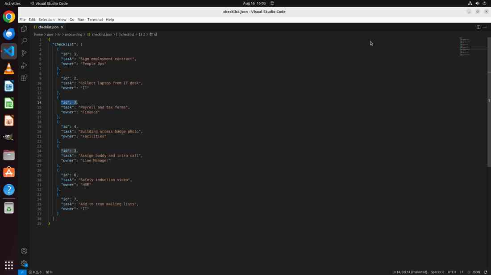
step 17 01:04:08
THINKINGNow I can see clearly. Both line 14 and line 24 have `"id": 3,` highlighted (both showing the selection highlight - line 14 is the "currently selected match" and line 24 is also highlighted from the search). This confirms both lines are `"id": 3,`. The file is still in its original state (0 problems, no unsaved dot in tab - the tab shows the X).
Now let me open a terminal. I'll use Terminal menu > New Terminal. Let me click Terminal in the menu bar.
ACTIONBoth `id: 3` occurrences are visible (lines 14 and 24). Now I'll open a terminal to make a precise, deterministic edit. Let me open the Terminal menu.
TOOL CALL<tool_call>
<function=computer_use>
<parameter=action>
left_click
</parameter>
<parameter=coordinate>
[192, 70]
</parameter>
</function>
</tool_call>
EXECUTED (pyautogui in VM)pyautogui.click(369, 75)
step 18 01:04:20
THINKINGThe Terminal menu is open. Let me click "New Terminal".
ACTIONThe Terminal menu is open. I'll click "New Terminal".
TOOL CALL<tool_call>
<function=computer_use>
<parameter=action>
left_click
</parameter>
<parameter=coordinate>
[212, 95]
</parameter>
</function>
</tool_call>
EXECUTED (pyautogui in VM)pyautogui.click(407, 102)
step 19 01:04:39
THINKINGA terminal is open at the bottom. The prompt is `user@user-virtual-machine:~$`.
First, let me confirm the file path and its content. Let me click into the terminal and run a command to check the file. Let me first view the file to confirm exact path and content.
Let me click in the terminal area to focus it, then type a command.
Let me first cat the file to confirm exact content and path.
ACTIONA terminal is open. Let me first confirm the file's exact content and path before editing.
TOOL CALL<tool_call>
<function=computer_use>
<parameter=action>
left_click
</parameter>
<parameter=coordinate>
[468, 791]
</parameter>
</function>
</tool_call>
EXECUTED (pyautogui in VM)pyautogui.click(899, 855)
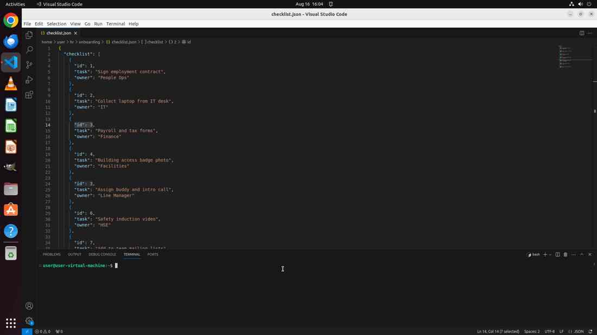
step 20.1 01:04:52
THINKINGThe terminal is focused. Let me run a command to display the file with line numbers to confirm content and path. Let me type the command.
ACTIONLet me display the file to confirm its exact content and path.
TOOL CALL<tool_call>
<function=computer_use>
<parameter=action>
type
</parameter>
<parameter=text>
cat -n /home/user/hr/onboarding/checklist.json
</parameter>
</function>
</tool_call>
<tool_call>
<function=computer_use>
<parameter=action>
key
</parameter>
<parameter=keys>
["enter"]
</parameter>
</function>
</tool_call>
EXECUTED (pyautogui in VM)pyautogui.typewrite("cat -n /home/user/hr/onboarding/checklist.json")
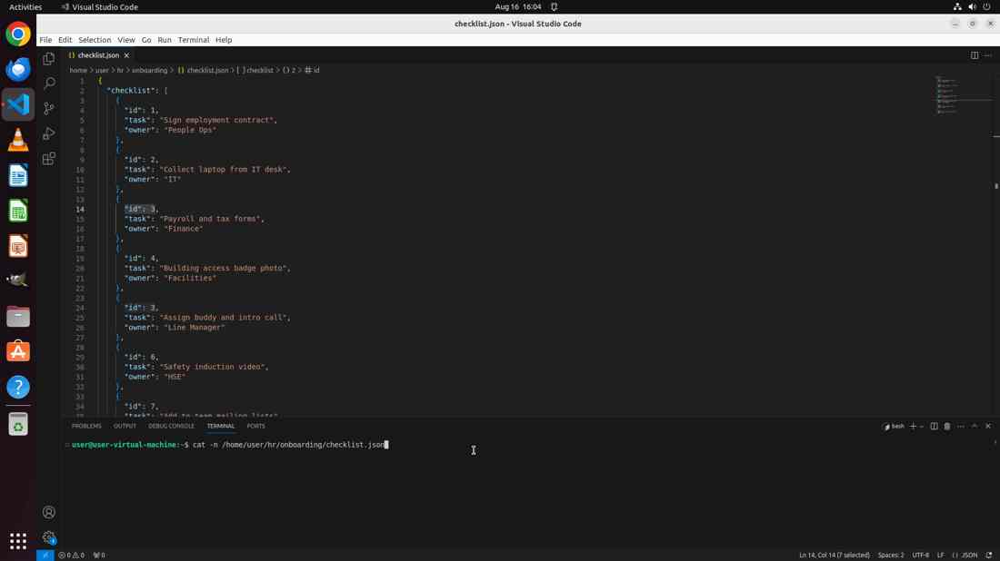
step 20.2 01:04:56
EXECUTED (pyautogui in VM)pyautogui.press("enter")
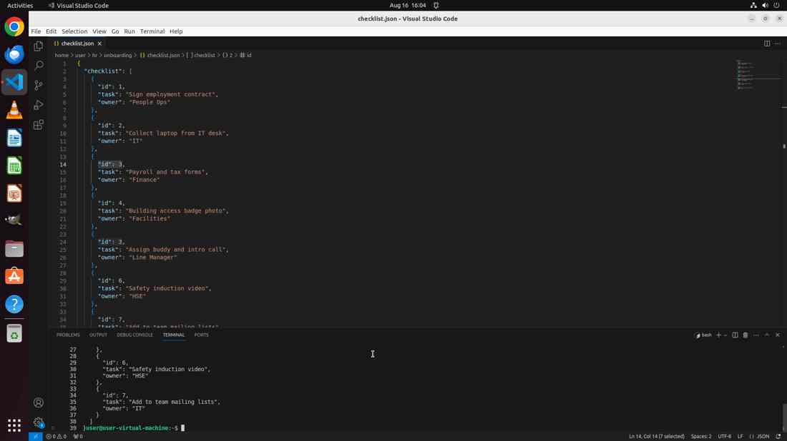
step 21.1 01:05:12
THINKINGThe file content is confirmed. I can see:
- Line 29: `"id": 6,`
- Line 30: `"task": "Safety induction video",`
- Line 34: `"id": 7,`
- Line 35: `"task": "Add to team mailing lists",`
- Line 39: `}`
And the top part (from earlier screenshot) confirmed:
- Line 14: `"id": 3,` (Payroll)
- Line 24: `"id": 3,` (Assign buddy)
- Line 25: `"task": "Assign buddy and intro call",`
So the file path /home/user/hr/onboarding/checklist.json exists and has the expected content.
Now let me run the perl command to change the second id:3 (line 24) to 5. I'll use a lookaround that targets the "Assign buddy" context:
perl -0777 -i -pe 's/("id": )3(,\s*"task": "Assign buddy)/${1}5$2/' /home/user/hr/onboarding/checklist.json
This will replace the `3` in `"id": 3` that is immediately followed by `,\s*"task": "Assign buddy`. Only line 24 qualifies.
Let me run it. After running, I'll verify with cat again, then validate JSON with python.
Actually, let me combine: run perl, then cat, then python -m json.tool to validate. But let me do them step by step to verify.
Let me run the perl command first.
ACTIONThe file content and path are confirmed. Now I'll run a precise `perl` substitution that changes the `3` in `"id": 3` only when it's immediately followed by the "Assign buddy" task (i.e., the later/duplicate occurrence on line 24).
TOOL CALL<tool_call>
<function=computer_use>
<parameter=action>
type
</parameter>
<parameter=text>
perl -0777 -i -pe 's/("id": )3(,\\s*"task": "Assign buddy)/${1}5$2/' /home/user/hr/onboarding/checklist.json
</parameter>
</function>
</tool_call>
<tool_call>
<function=computer_use>
<parameter=action>
key
</parameter>
<parameter=keys>
["enter"]
</parameter>
</function>
</tool_call>
EXECUTED (pyautogui in VM)pyautogui.typewrite("perl -0777 -i -pe 's/(\"id\": )3(,\\\\s*\"task\": \"Assign buddy)/${1}5$2/' /home/user/hr/onboarding/checklist.json")
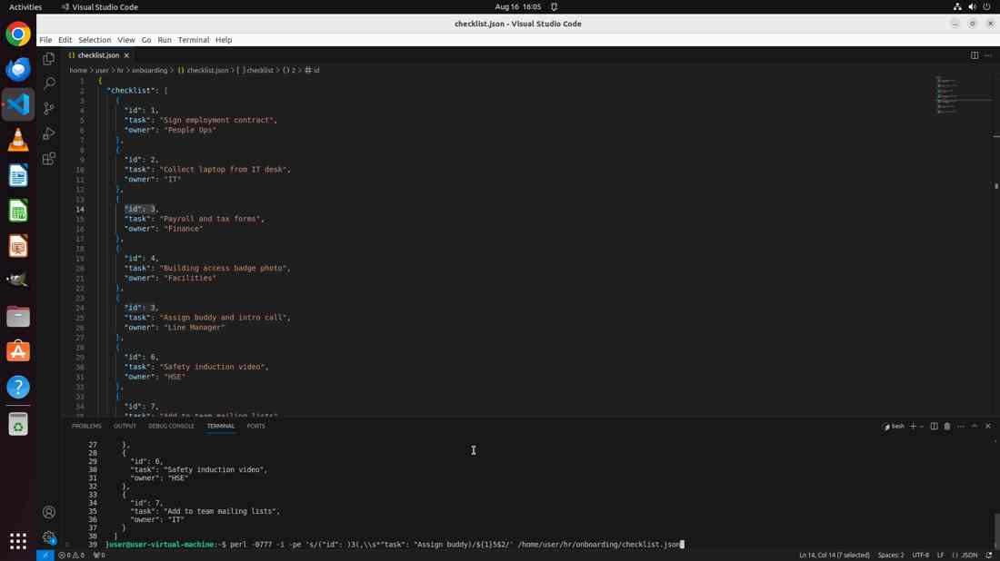
step 21.2 01:05:16
EXECUTED (pyautogui in VM)pyautogui.press("enter")
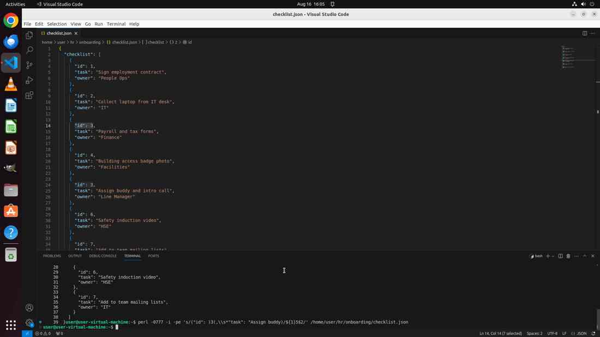
step 22.1 01:05:28
THINKINGThe perl command ran without error (returned to prompt). The command was:
`perl -0777 -i -pe 's/("id": )3(,\s*"task": "Assign buddy)/${1}5$2/' /home/user/hr/onboarding/checklist.json`
Now let me verify the result. Let me cat the file again and validate the JSON. Let me run both: cat and python json validation.
Let me run: cat -n the file and python3 -m json.tool to validate.
ACTIONThe command ran without errors. Let me verify the result and validate that the JSON is still valid.
TOOL CALL<tool_call>
<function=computer_use>
<parameter=action>
type
</parameter>
<parameter=text>
cat -n /home/user/hr/onboarding/checklist.json && echo "---- JSON VALIDATION ----" && python3 -m json.tool /home/user/hr/onboarding/checklist.json > /dev/null && echo "VALID JSON"
</parameter>
</function>
</tool_call>
<tool_call>
<function=computer_use>
<parameter=action>
key
</parameter>
<parameter=keys>
["enter"]
</parameter>
</function>
</tool_call>
EXECUTED (pyautogui in VM)pyautogui.typewrite("cat -n /home/user/hr/onboarding/checklist.json && echo \"---- JSON VALIDATION ----\" && python3 -m json.tool /home/user/hr/onboarding/checklist.json > /dev/null && echo \"VALID JSON\"")
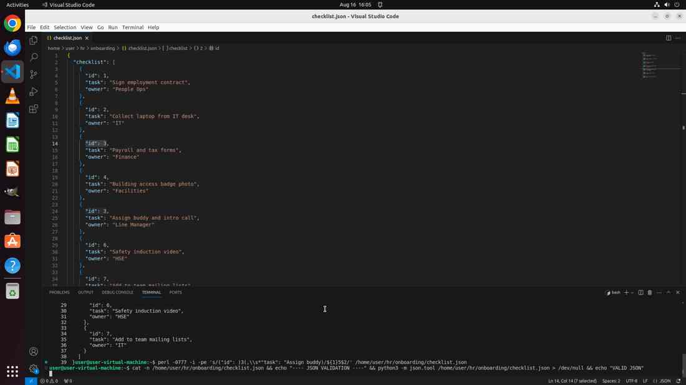
step 22.2 01:05:32
EXECUTED (pyautogui in VM)pyautogui.press("enter")
step 23.1 01:05:45
THINKINGThe output shows "---- JSON VALIDATION ----" followed by "VALID JSON". So the JSON is valid.
But I need to verify that the id was actually changed to 5 in line 24. The cat output scrolled and I only see the bottom part (lines 29-39). I don't see line 24 in the visible portion. Let me verify line 24 specifically. Let me grep for the ids.
Let me run a command to show all the id lines: grep -n '"id"' or grep the "Assign buddy" context.
Let me run: grep -n -E '"id"|Assign buddy' /home/user/hr/onboarding/checklist.json
ACTIONThe JSON is valid. Now let me confirm the specific ID change by listing all the `id` lines and the "Assign buddy" entry.
TOOL CALL<tool_call>
<function=computer_use>
<parameter=action>
type
</parameter>
<parameter=text>
grep -n -E '"id"|Assign buddy' /home/user/hr/onboarding/checklist.json
</parameter>
</function>
</tool_call>
<tool_call>
<function=computer_use>
<parameter=action>
key
</parameter>
<parameter=keys>
["enter"]
</parameter>
</function>
</tool_call>
EXECUTED (pyautogui in VM)pyautogui.typewrite("grep -n -E '\"id\"|Assign buddy' /home/user/hr/onboarding/checklist.json")
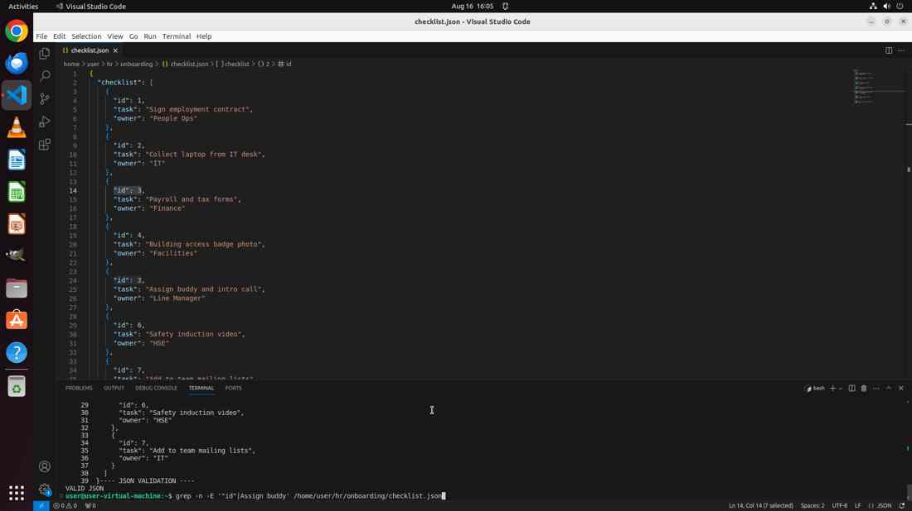
step 23.2 01:05:49
EXECUTED (pyautogui in VM)pyautogui.press("enter")
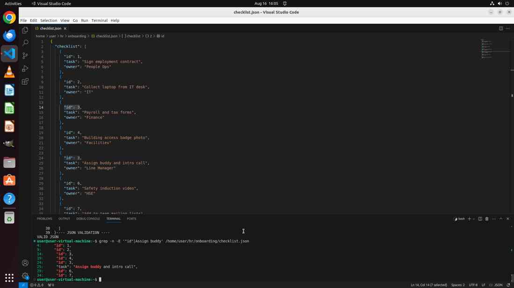
step 24.1 01:06:26
THINKINGThe grep output shows:
- 4: `"id": 1,`
- 9: `"id": 2,`
- 14: `"id": 3,`
- 19: `"id": 4,`
- 24: `"id": 3,`
- 25: `"task": "Assign buddy and intro call",`
- 29: `"id": 6,`
- 34: `"id": 7,`
Wait! Line 24 still shows `"id": 3,`?! The grep shows line 24 is still `"id": 3`. That means my perl replacement did NOT work!
But the JSON validation said "VALID JSON" - that's expected since it was valid both before and after.
Hmm. So the perl command didn't change line 24. Why? Let me reconsider the regex.
My perl regex: `s/("id": )3(,\s*"task": "Assign buddy)/${1}5$2/`
Wait, the issue: in the replacement I used `${1}5$2`. That's correct - group 1 is `"id": `, then `5`, then group 2. That would produce `"id": 5,\s*"task": "Assign buddy`. Fine.
But the search didn't match? The search part: `("id": )3(,\s*"task": "Assign buddy)`.
Hmm, wait. In the file, is there really `,\s*"task"` right after the `3`? Line 24: `"id": 3,` then newline then line 25: ` "task": "Assign buddy and intro call",`. So after `3` comes `,` then `\n` then spaces then `"task"`. My regex `,\s*"task"` - `,\s*` matches comma + whitespace (newline + spaces). Should work with -0777 slurp mode.
Wait, maybe the issue is that perl ran but matched nothing because... let me reconsider. Actually, maybe it DID match and replace, but there's a subtlety. Let me reconsider: the grep clearly shows line 24 is `"id": 3,` still. So no change happened.
Wait, unless the perl `-i` in-place edit failed silently. Let me reconsider - actually maybe there's an issue with how the regex is being interpreted. Let me reconsider `("id": )` - the space before `)`. And `3` literal. Then `(,\s*"task": "Assign buddy)`.
Hmm, actually wait. Let me reconsider whether the shell mangled the command. The command I typed had single quotes around the perl program: 's/("id": )3(,\s*"task": "Assign buddy)/${1}5$2/'. Inside single quotes, the shell passes it literally to perl. That should be fine. The `\s` inside single quotes is passed as backslash-s to perl, which perl interprets as whitespace class. Good.
So why didn't it match? Let me test more carefully. Let me run a dry-run version that just prints whether it matches.
Actually, let me reconsider. Maybe the issue is that the replacement happened but I'm looking at a stale grep? No, grep just ran on the file.
Wait, could it be that perl -i created a backup and the file is fine but... no, -i without extension just replaces in place.
Let me debug. Let me run a perl one-liner that tests the match and prints:
perl -0777 -ne 'print "MATCH: $1\n" if /("id": )3(,\s*"task": "Assign buddy")/' file
Actually, let me reconsider the regex more carefully. The pattern `("id": )3` — in the file the text is `"id": 3,`. So `("id": )` matches `"id": ` (with trailing space), then `3` matches. Good. Then `(,\s*"task": "Assign buddy)` — after `3` is `,`. Then `\s*` matches `\n `. Then `"task": "Assign buddy`.
This should match. Unless... the actual whitespace between lines is not what I think. But grep showed line 25 starts with spaces then "task".
Hold on — maybe the problem is that the file uses a different newline or the `3` and following. Let me just test with a simpler, more robust approach.
Actually, let me reconsider: maybe perl DID run but there was an error I didn't see because the prompt returned. Let me check by running the perl with error output. Actually if it errored it would print to stderr which I'd see.
Let me try a different, simpler and more reliable approach. Since I now know line 24 is the target, I could use a line-based sed. But line-based sed with the exact line number is cleanest and most deterministic:
The target is line 24: ` "id": 3,`. I want to change it to ` "id": 5,`. But sed by line number: `sed '24s/"id": 3,/"id": 5,/' file`. This is deterministic. But wait - I need to make sure it only affects the id on line 24 and the line indeed is the id line. Yes, line 24 is `"id": 3,`.
Actually, using line number is safe here since I've confirmed line 24 = the Assign buddy id. Let me use sed:
sed -i '24s/\("id": \)3/\15/' /home/user/hr/onboarding/checklist.json
This replaces on line 24 only, the first occurrence of `"id": 3` with `"id": 5`.
Actually simpler: `sed -i '24s/"id": 3,/"id": 5,/' file`.
But let me reconsider why perl failed, because if there's a subtle whitespace issue, sed by pattern might also fail. But sed by line number with a specific pattern on that line is robust. Let me first test what's actually on line 24 with a hexdump or od to be 100% sure of the content.
Actually, let me reconsider the perl failure. Oh wait! I think I see it. Let me reconsider: maybe the perl command DID match but the replacement `${1}5$2` — in perl, `${1}` is group 1, `5` literal, `$2` group 2. That's `"id": ` + `5` + `,\s*"task": "Assign buddy`. Result: `"id": 5,\s*"task": "Assign buddy`. That's correct.
Hmm, but grep shows no change. So it truly didn't match.
Let me debug by running a test perl. Let me just try sed by line number, it's the most reliable. Let me do that and then verify.
Actually, let me first understand: let me run `sed -n '24p' file | cat -A` to see the exact bytes of line 24.
ACTIONThe grep shows line 24 is still `"id": 3,` — my perl substitution didn't match. Let me inspect the exact bytes of line 24 to understand why.
TOOL CALL<tool_call>
<function=computer_use>
<parameter=action>
type
</parameter>
<parameter=text>
sed -n '24,25p' /home/user/hr/onboarding/checklist.json | cat -A
</parameter>
</function>
</tool_call>
<tool_call>
<function=computer_use>
<parameter=action>
key
</parameter>
<parameter=keys>
["enter"]
</parameter>
</function>
</tool_call>
EXECUTED (pyautogui in VM)pyautogui.typewrite("sed -n '24,25p' /home/user/hr/onboarding/checklist.json | cat -A")
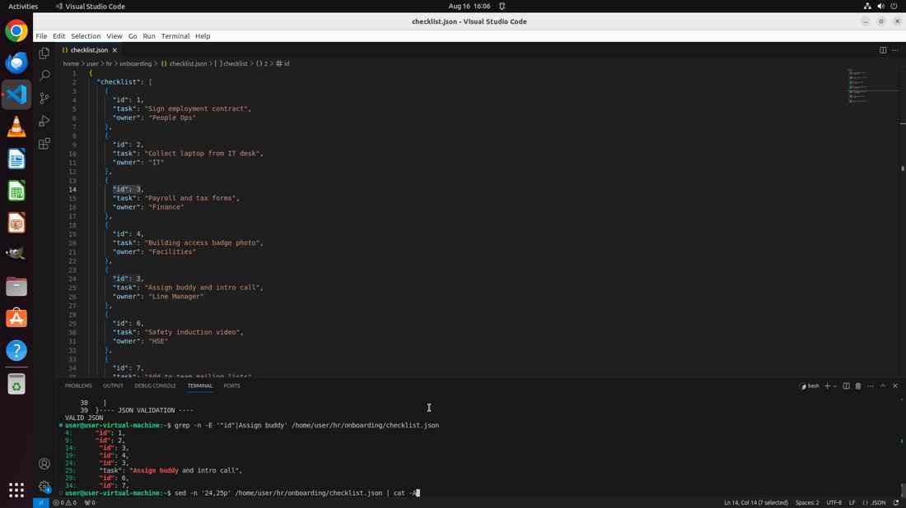
step 24.2 01:06:30
EXECUTED (pyautogui in VM)pyautogui.press("enter")
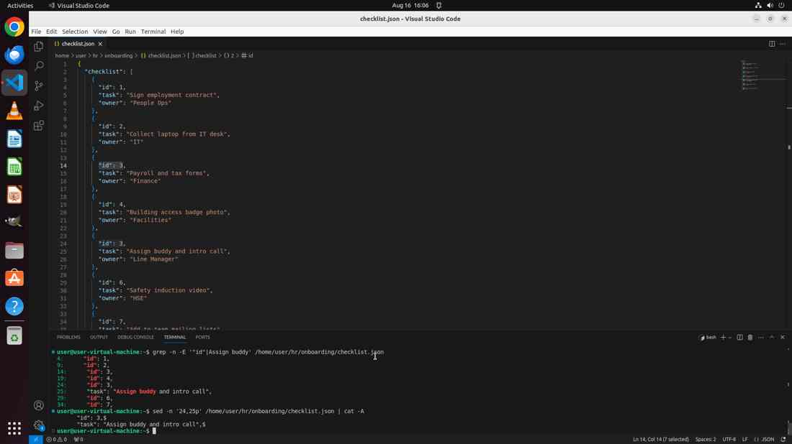
step 25.1 01:06:54
THINKINGThe `cat -A` output shows:
- Line 24: ` "id": 3,$` (the $ marks end of line, and I can see spaces before "id"). The `$` at end indicates LF line ending, no `^M` (no carriage return). Good, clean LF.
- Line 25: ` "task": "Assign buddy and intro call",$`
So line 24 is ` "id": 3,` with 8 spaces of indentation (I see ` "id"` - let me count, hard to count exactly but it's spaces). The content is exactly as expected: `"id": 3,` with a comma, then LF.
So the content is normal. Then why did my perl regex not match?
The pattern: `("id": )3(,\s*"task": "Assign buddy)`.
Line 24-25 combined: ` "id": 3,\n "task": "Assign buddy and intro call",`
The pattern should find `"id": 3` then `,\s*"task": "Assign buddy`.
Wait... maybe perl's -i with the regex - let me reconsider. Actually, maybe the issue is that when I typed the command, the terminal or autocomplete altered something. Or maybe the command actually didn't execute the substitution because of a quoting issue that resulted in a no-op but no error.
Let me just test the match directly without -i:
perl -0777 -ne 'print "MATCHED\n" if /("id": )3(,\s*"task": "Assign buddy")/' /home/user/hr/onboarding/checklist.json
If it prints MATCHED, the regex works and the earlier -i must have had an issue. If not, the regex is wrong.
Actually, let me just go with the robust line-number sed approach which I'm confident about now that I've confirmed line 24 = ` "id": 3,`. Let me run:
sed -i '24s/"id": 3,/"id": 5,/' /home/user/hr/onboarding/checklist.json
This is deterministic: on line 24, replace `"id": 3,` with `"id": 5,`.
Wait, but sed's `s` with `/` delimiters and the pattern contains no `/`. Good. The pattern `"id": 3,` — in sed BRE, `"` is literal, space literal, `:` literal, `3` literal, `,` literal. All fine. Replace with `"id": 5,`.
Let me run this.
Actually, let me reconsider - I want to be careful that sed `24s` only changes line 24. Yes. And the pattern `"id": 3,` appears only once on line 24 (the whole line is ` "id": 3,`). So it's safe.
Let me run the sed command.
ACTION`cat -A` confirms line 24 is a clean ` "id": 3,` with LF endings (no stray carriage returns). The perl regex likely had a subtle issue, so I'll use a deterministic line-number `sed` targeting line 24 specifically.
TOOL CALL<tool_call>
<function=computer_use>
<parameter=action>
type
</parameter>
<parameter=text>
sed -i '24s/"id": 3,/"id": 5,/' /home/user/hr/onboarding/checklist.json
</parameter>
</function>
</tool_call>
<tool_call>
<function=computer_use>
<parameter=action>
key
</parameter>
<parameter=keys>
["enter"]
</parameter>
</function>
</tool_call>
EXECUTED (pyautogui in VM)pyautogui.typewrite("sed -i '24s/\"id\": 3,/\"id\": 5,/' /home/user/hr/onboarding/checklist.json")
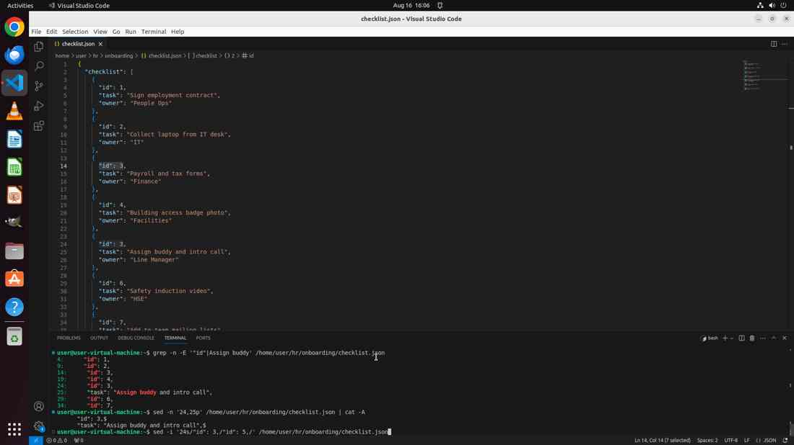
step 25.2 01:06:58
EXECUTED (pyautogui in VM)pyautogui.press("enter")
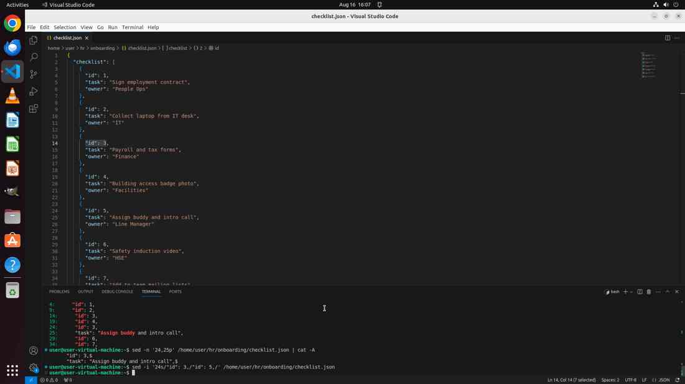
step 26.1 01:07:16
THINKINGNow I can see that line 24 in the editor (top) now shows `"id": 5,` for the "Assign buddy and intro call" entry! The editor auto-reloaded the file (since there were no unsaved changes). Line 24: `"id": 5,` and line 25: `"task": "Assign buddy and intro call",`.
The other entries remain:
- Line 4: `"id": 1,`
- Line 9: `"id": 2,`
- Line 14: `"id": 3,` (Payroll) - unchanged, correct
- Line 19: `"id": 4,`
- Line 24: `"id": 5,` (Assign buddy) - CHANGED ✓
- Line 29: `"id": 6,`
- Line 34: `"id": 7,`
Now the IDs are 1,2,3,4,5,6,7 - all unique and sequential.
Now let me verify the JSON is still valid and confirm the change with a final grep/validation.
ACTIONLine 24 now shows `"id": 5,` for the "Assign buddy and intro call" entry, while line 14 (Payroll) remains `"id": 3,`. The IDs are now 1–7, all unique. Let me do a final validation of the JSON and confirm the change.
TOOL CALL<tool_call>
<function=computer_use>
<parameter=action>
type
</parameter>
<parameter=text>
grep -n -E '"id"|Assign buddy' /home/user/hr/onboarding/checklist.json && python3 -m json.tool /home/user/hr/onboarding/checklist.json > /dev/null && echo "=== VALID JSON ==="
</parameter>
</function>
</tool_call>
<tool_call>
<function=computer_use>
<parameter=action>
key
</parameter>
<parameter=keys>
["enter"]
</parameter>
</function>
</tool_call>
EXECUTED (pyautogui in VM)pyautogui.typewrite("grep -n -E '\"id\"|Assign buddy' /home/user/hr/onboarding/checklist.json && python3 -m json.tool /home/user/hr/onboarding/checklist.json > /dev/null && echo \"=== VALID JSON ===\"")
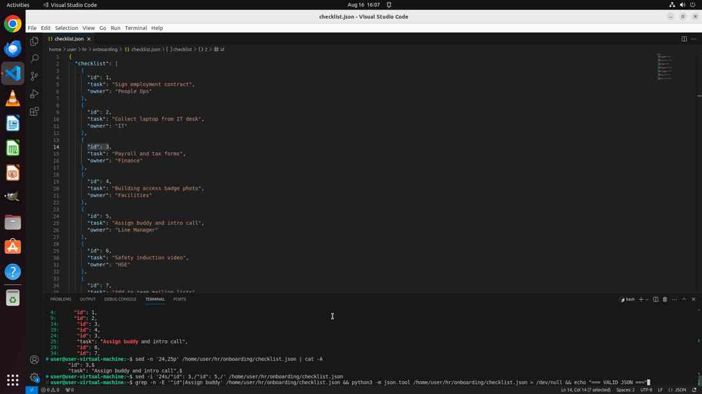
step 26.2 01:07:20
EXECUTED (pyautogui in VM)pyautogui.press("enter")
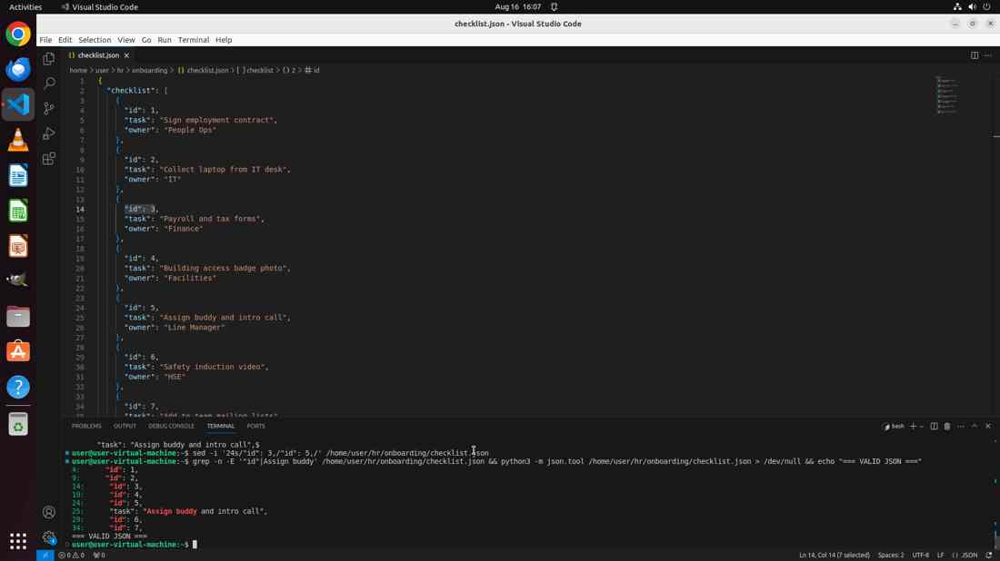
step 27 01:07:41
THINKINGThe final grep output confirms:
- 4: `"id": 1,`
- 9: `"id": 2,`
- 14: `"id": 3,`
- 19: `"id": 4,`
- 24: `"id": 5,`
- 25: `"task": "Assign buddy and intro call",`
- 29: `"id": 6,`
- 34: `"id": 7,`
And "=== VALID JSON ===" printed, confirming the file is valid JSON.
So the duplicate is resolved:
- The first `id: 3` (line 14, "Payroll and tax forms") keeps id 3.
- The later one (line 24, "Assign buddy and intro call") now has id 5, which was the next free ID (filling the gap between 4 and 6).
All IDs are now unique: 1, 2, 3, 4, 5, 6, 7. And the JSON is valid.
The task is complete. The file was edited on disk and VS Code auto-reloaded it (visible in the editor, line 24 now shows id: 5). No unsaved changes in the editor (tab shows X, no dot), and the editor reflects the on-disk content.
The task is complete. Let me provide a summary.
ACTIONThe task is complete and verified.
**What was done:**
- The onboarding checklist had two entries sharing `id: 3`:
- Line 14 — "Payroll and tax forms" (Finance)
- Line 24 — "Assign buddy and intro call" (Line Manager)
- The **later** entry ("Assign buddy and intro call", line 24) was given the next free ID, **`5`** — filling the gap in the existing sequence (the IDs were 1, 2, 3, 4, _3_, 6, 7, so `5` was the next available one).
**Verification (from terminal):**
- IDs are now `1, 2, 3, 4, 5, 6, 7` — all unique, with the first `id: 3` (Payroll) preserved and the later one changed to `5`.
- `python3 -m json.tool` parsed the file successfully and printed `=== VALID JSON ===`, confirming the file remains valid JSON.
- The VS Code editor auto-reloaded and now displays `"id": 5,` on line 24, matching the saved file.
EXECUTED (pyautogui in VM)DONE